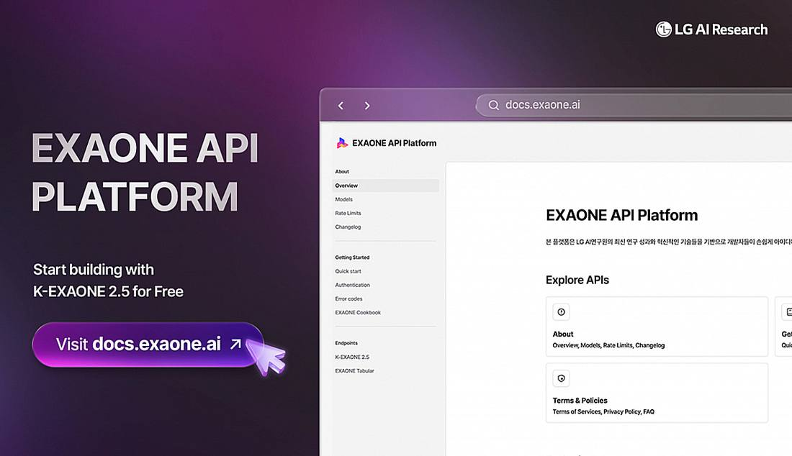

LG Opens K-EXAONE 2.5 API Free, Reporting 70% Performance Gain
LG AI Research announced on November 9, 2026 at Nvidia AI Day Seoul 2026 that the API for K-EXAONE 2.5, its proprietary AI foundation model, is now free through the EXAONE API Platform, with access by API key for developers, startups, companies and research institutions. The 750-billion-parameter model, with 31 billion active parameters, is a technology-validation model built on the August 2026 release; LG reports more than 70 percent improvement across 24 internal metrics and agentic benchmark scores close to DeepSeek V4.1 Flash and GLM 5.3. LG aims to complete a frontier-level EXAONE model by January 2027.

- 01THE ANNOUNCEMENT — LG AI Research announced on November 9, 2026 at Nvidia AI Day Seoul 2026 in Seoul that the API for K-EXAONE 2.5 is now free through the EXAONE API Platform, accessible with an API key for service development and research.
- 02THE MODEL — K-EXAONE 2.5 is a technology-validation model built on the August 2026 release, with 750 billion total parameters and 31 billion active, a 512,000-token context window, and vendor-reported agentic benchmark scores near DeepSeek V4.1 Flash and GLM 5.3.
- 03THE WATCHPOINT — Whether independent evaluations confirm LG's benchmark claims, how long free access lasts and what limits follow, and whether LG delivers the frontier-level EXAONE model it targets for January 2027.
WHAT HAPPENEDWhat Happened
LG AI Research announced on Sunday, November 9, 2026 that it is opening the application programming interface for K-EXAONE 2.5, its proprietary artificial intelligence foundation model, free of charge. The announcement came at Nvidia AI Day Seoul 2026 at COEX in Seoul. Developers, startups, companies and research institutions can use the model for service development and research at no cost by obtaining an API key through the EXAONE API Platform.
K-EXAONE 2.5 is a technology-validation model built by applying additional training to the second-generation model LG released in August 2026. LG describes it as a 750-billion-parameter model with 31 billion active parameters, handling text in Korean and English with a 512,000-token context window and a January 2026 knowledge cutoff. The endpoint is OpenAI-compatible, using the model name k-exaone_v2.5. LG said its internal analysis shows overall performance across 24 evaluation metrics improved by more than 70 percent compared with the August release, and that it aims to complete a frontier-level EXAONE model by January 2027.
WHY IT MATTERSA Korean model enters the agentic race on price, not weights
LG is not opening the model, it is opening access to it. K-EXAONE 2.5 arrives as a hosted API only, with no open weights announced, a contrast with the Apache 2.0 open-weight release of the earlier K-EXAONE 2.0. The free tier is a distribution move: anyone with an API key can test a Korean-built model inside existing OpenAI-compatible tooling, and LG gets real-world validation data ahead of the third-generation model it plans for January 2027.
The benchmark story is deliberately framed against Chinese frontier models rather than American ones. LG compared K-EXAONE 2.5 with DeepSeek V4.1 Flash and GLM 5.3 across four agentic benchmarks, scoring 74.6 on AutomationBench against DeepSeek at 74.9 and GLM at 71.6, and 59.2 on SWE-Bench Pro against 58.4 and 64.0. The numbers are vendor-reported and untested by third parties, but the comparison set itself is the signal: LG is positioning a sovereign Korean model as a peer of the leading Chinese open-weight systems.
WHY IT MATTERSThe sovereign AI pitch, made on Nvidia's stage
The venue matters as much as the model. LG announced the free API at Nvidia AI Day Seoul, the same event where Nvidia named LG AI Research as one of three finalists in South Korea's government-backed sovereign AI project, alongside SK Telecom and Upstage, all building on Nvidia's open Nemotron datasets. The free API and the government project are two halves of one strategy: a Korean model, trained and served at home, offered to domestic developers before the state picks its two winners early next year.
LG also said it is considering Nvidia's Dynamo inference technology to improve the model's efficiency and scalability, tying the Korean stack tighter to Nvidia's serving software. The open question is durability: LG has not said how long free access lasts or what limits will apply once it ends, and the 70 percent improvement claim rests on LG's own analysis, not an independent evaluation.
SIGNAL JUDGMENT — ANALYSISFree access is the product here, not the model
Tokenta Signal's judgment: LG is giving away the API, not the model, and that is the point. A free hosted endpoint turns K-EXAONE 2.5 into a low-friction trial for Korean developers, generates the real-world usage data a technology-validation model needs, and stakes LG's claim in the sovereign AI contest before the government picks its two winners early next year. The benchmark scores against DeepSeek and GLM are vendor-reported and should be read as a positioning statement, not a verdict. What is verifiable is the offer itself: a 750-billion-parameter Korean model, free to call, on the day Nvidia's Seoul stage put Korea's sovereign AI race in the spotlight.
WHAT REMAINS UNCERTAINWhat Remains Uncertain
EVIDENCEEvidence
LG AI Research said on November 9, 2026 at Nvidia AI Day Seoul 2026 in Seoul that it will open the API for K-EXAONE 2.5, its upgraded in-house AI foundation model, free of charge, and reported agentic benchmark scores competitive with DeepSeek V4.1 Flash and GLM 5.3.
PRIMARY SOURCESPrimary Sources
- LG AI Research: K-EXAONE 2.5 API Available for Free!
https://medium.com/@lgairesearch/k-exaone-2-5-api-available-for-free-c0214cf9024e - MoneyToday: LG AI Research Institute opens free access to 'K-Exaone 2.5,' Boosting performance by over 70%
https://www.mt.co.kr/en/industry/2026/11/09/2026110909413580792 - Europe Says: LG AI Research opens K-EXAONE 2.5 API free, sees 70% performance gain
https://www.europesays.com/3362339/
RELATEDRelated Intelligence
- Nvidia Board Approaches Arm CEO Rene Haas as Huang Successor; Employees Push for Founder's Return
- Starship Flight 15 Lifts Off, but Booster Catch Aborted; Ship 42 Still Aims for Saturday Return
- Microsoft 365 Outage Passes 29 Hours as 22:00 UTC Update Says Recovery Sustained, Mail Backlog Still Draining
- FAA Clears Starship Flight 15 for Historic Double-Catch Attempt